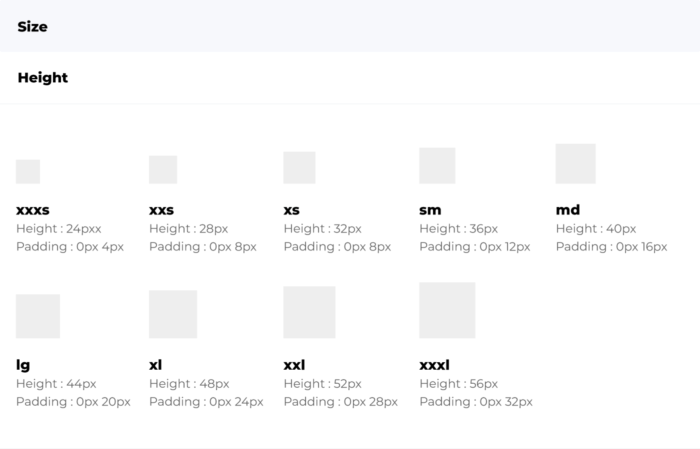
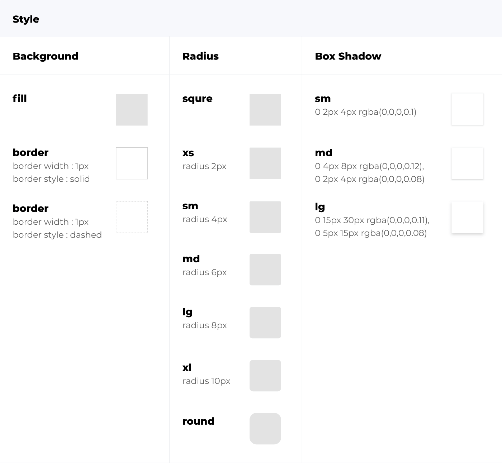
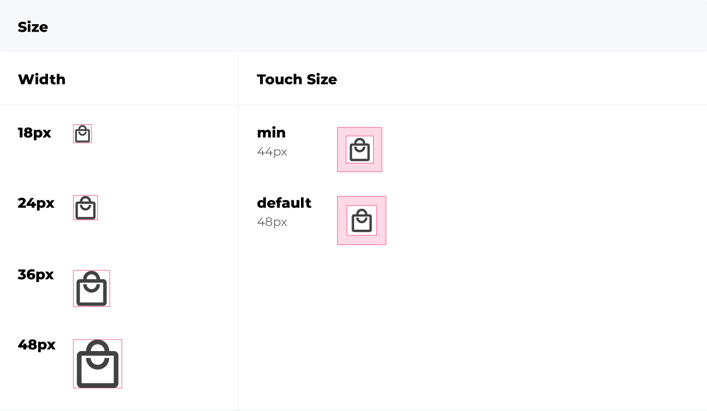
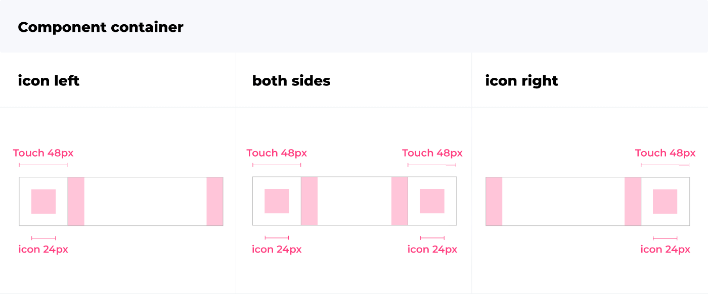
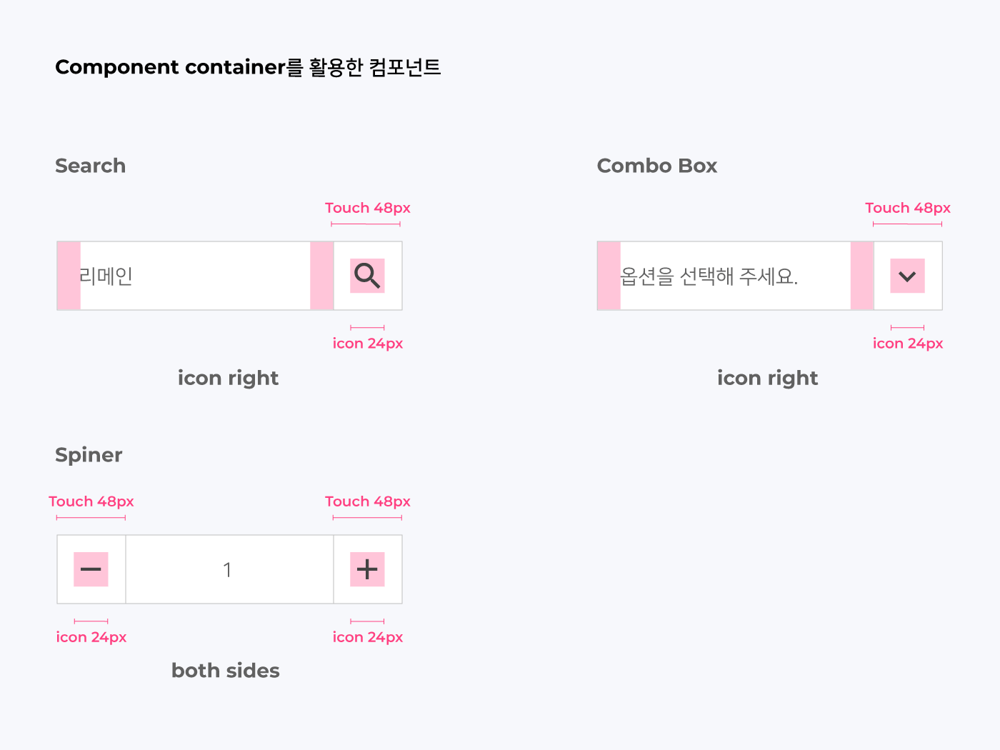
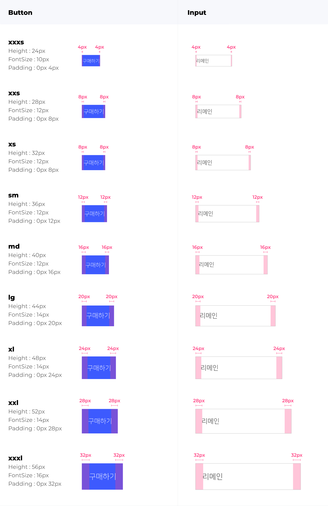
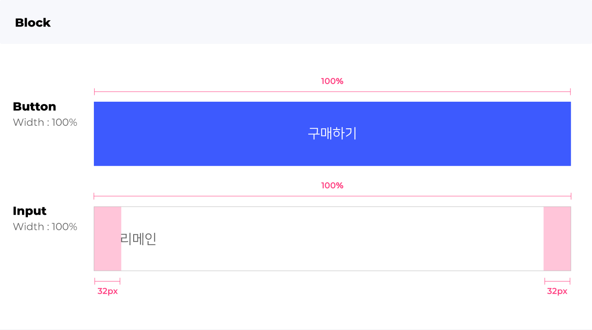
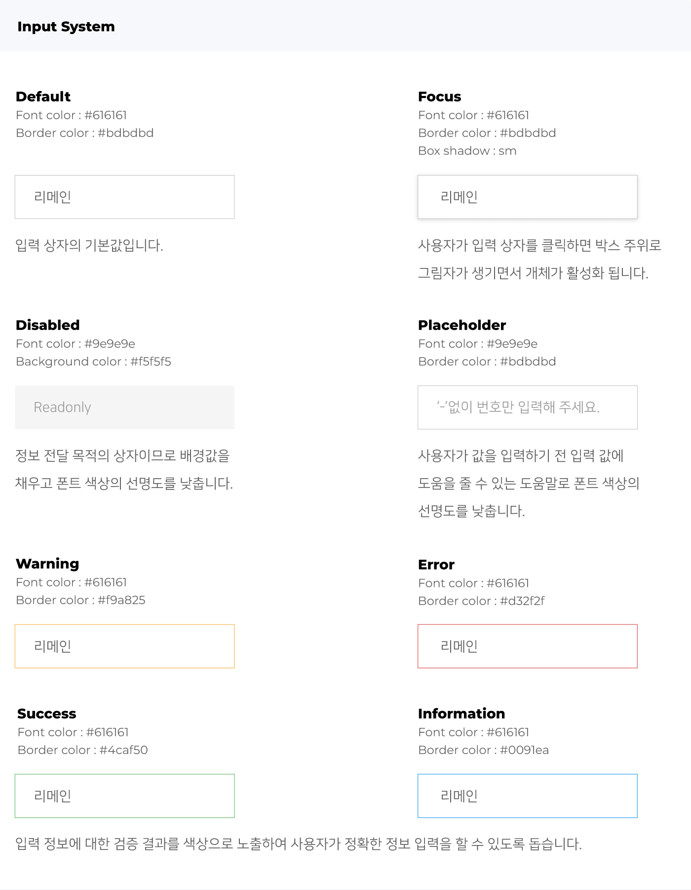
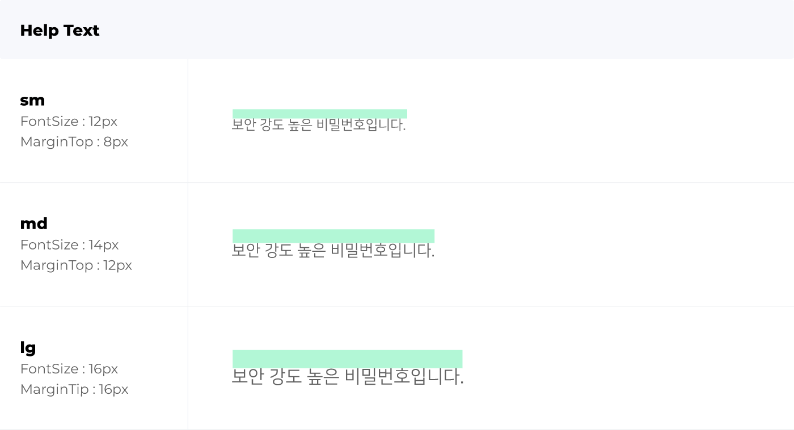
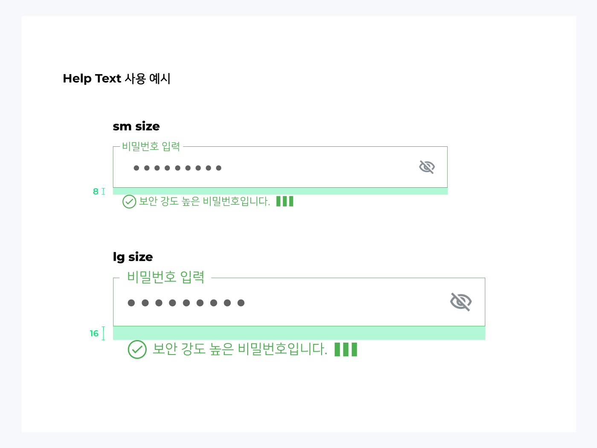

컴포넌트 코어 시스템
프로젝트 진행시 웹 화면의 전반적인 구성요소들의 일관성을 유지하고 팀 내부의 유연한 시스템을 만들기 위한 컴포넌트 시스템의 제작 기준을 제안합니다.
컴포넌트 코어 시스템의 정의
컴포넌트는 프로젝트 종류를 막론하고 웹 사이트를 구성하는 공통 요소입니다. 매 프로젝트마다 컴포넌트를 새로 제작해야 하는 비효율적인 프로세스를 벗어나 모든 컴포넌트에 공통으로 적용되는 요소를 도출하여 각 컴포넌트에 적용시켜 매 프로젝트마다 재사용이 가능합니다. 때문에 작업 시간이 대폭 단축되고 더 체계적으로 업무를 수행할 수 있습니다.
UI Component Core System
UI Component Core System은 세부적으로 Size와 Style 두 가지로 나눌 수 있습니다. 첫 번째로 Size는 xs, sm, md, lg, xl 총 다섯 가지로 제공하며 이와 같이 제공하는 이유는 각각의 컴포넌트를 세트로 사용했을 시 높이 값의 통일성을 유지하기 위함입니다. 따라서 모든 컴포넌트는 높이를 기준으로 제작할 것을 권장합니다.

두 번째로 Style은 크게 세 가지 옵션으로 분류되며 Background는 컴포넌트의 Fill 값 적용 여부, Radius는 컴포넌트 모서리 반경의 정도, Box Shadow는 그림자의 크기 정도입니다. 이는 프로젝트의 컨셉과 목적에 따라 사용자가 선택적으로 사용 가능합니다.
Icon Component Size
Component container
Component container는 총 세 가지 옵션이 있으며 아이콘의 정렬 위치와 종류에 따라 여러 종류의 컴포넌트를 제작할 수 있어 업무의 효율성을 높여줍니다.
 UI Component
컴포넌트 코어 시스템을 적용한 UI Component입니다.
 UI Component Interaction
각각의 UI Component의 상황별 액션에 대한 제작 권장사항에 대해서 서술되어 있습니다.
Help Text
사용자가 정보 입력 중 필드 하단에 노출됩니다. 입력 정보에 대한 검증 결과를 노출하여 사용자가 정확한 정보 입력을 할 수 있도록 돕는 도움말입니다.
 